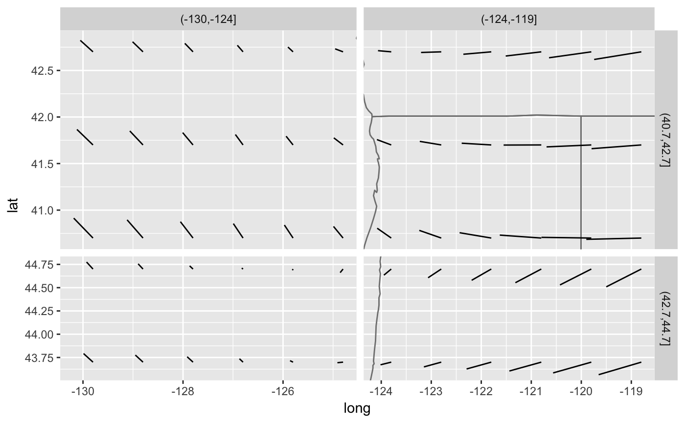

Display a fixed map on a plot.
annotation_map(map, ...)
| map | data frame representing a map. Most map objects can be
converted into the right format by using |
|---|---|
| ... | other arguments used to modify aesthetics |
if (require("maps")) { usamap <- map_data("state") seal.sub <- subset(seals, long > -130 & lat < 45 & lat > 40) ggplot(seal.sub, aes(x = long, y = lat)) + annotation_map(usamap, fill = "NA", colour = "grey50") + geom_segment(aes(xend = long + delta_long, yend = lat + delta_lat)) seal2 <- transform(seal.sub, latr = cut(lat, 2), longr = cut(long, 2)) ggplot(seal2, aes(x = long, y = lat)) + annotation_map(usamap, fill = "NA", colour = "grey50") + geom_segment(aes(xend = long + delta_long, yend = lat + delta_lat)) + facet_grid(latr ~ longr, scales = "free", space = "free") }